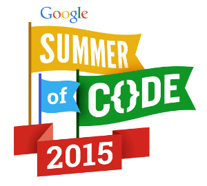

Google Summer of Code 2015: jBPM Mobile (MGTW)
Original Post: http://salaboy.com/2015/09/25/google-summer-of-code-2015-success-story-jbpm-mobile-mgtw/
I would like to share with all you guys the success story from the Google Summer of Code 2015 program in collaboration with the jBPM project. This year Rodrigo Garcete from (Ciudad del Este) Paraguay, who this year was in charge of upgrading the jBPM Mobile implementation created using MGWT. This application is a proof of concept showing a fully functional mobile client that can deploy KIE Jars to the execution runtime and then start processes and tasks.

I personally had a great experience interacting with Rodrigo during the program and I do believe that the jBPM community gained a very valuable community member. Here you can find Rodrigo’s fork containing the latest version of the code: https://github.com/rorogarcete/jbpm-console-ng/tree/mobile-integration-mgwt2.0
Keep reading to see what Rodrigo’s experience was and at the end a short video showing the app in action.
Rodrigo about the GSoC Program
Hi everyoneI am very grateful to the GsoC2015 program, for giving me the opportunity to participate this year, it was my first experience working with an open source community.Also, I want to thank the JBoss.org community, specifically my mentor Mauricio Salatino (salaboy), for the trust you have placed in me.The project to which work closely with my mentor salaboy this summer called jBPM Console NG Mobile, as its name implies, the aim of the project was to adapt the jBPM Console NG application and make it available in the mobile world.It is important to mention that the project was already running, but with an old version of MGWT (1.2) and it was also using old services from the jBPM infrastructure.First thing I did was to migrate all components to use the latest MGWT version (2.0).Then I had to modify the API calls to backend services, these changed a lot in version 6.4.0-SNAPSHOT.The work was not easy .. but it wasnt impossible, whenever I hit some problems, salaboy help me, explaining, and answering any questions I had, guiding me towards the right path.After the first evaluation (mid term), all the upgrade was completed and we started looking into adding some new features and improvements. Little by little I was learning the internals of project, everything started to make more sense, and I was getting faster in getting things up and running.In the final stage, we added new features such as the Deployment screen, the ability to start a process with variables and also completing tasks with simple variables.From my side, I can say that I learned a lot, the experience was very rewarding, and I would like to encourage other students in the world to participate in this program. You will learn a lot by working on any open source project.My idea is to continue collaborating with the project, keep improving it, adding new features, etc.,
To close this post, I uploaded a video showing the features and improvements that we have had done with salaboy during the program.
Summing up
This was a great year for the program and in my opinion the end results were exactly what the program was designed for:
- Students getting involved in open source communities
- Contributing valuable code and research
- The Student learned real life tools and technologies
Hopefully next year one or more students can participate in the program and contribute to jBPM and Drools!